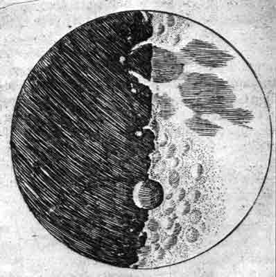
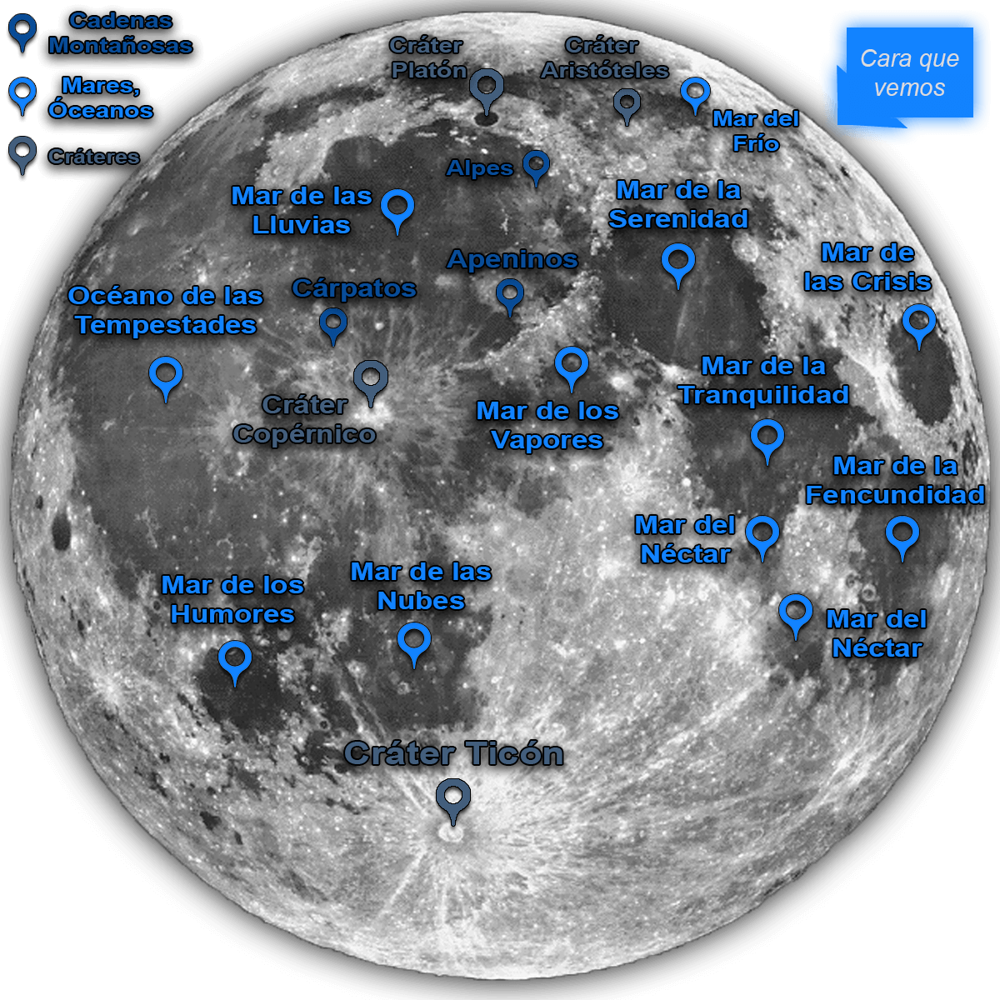
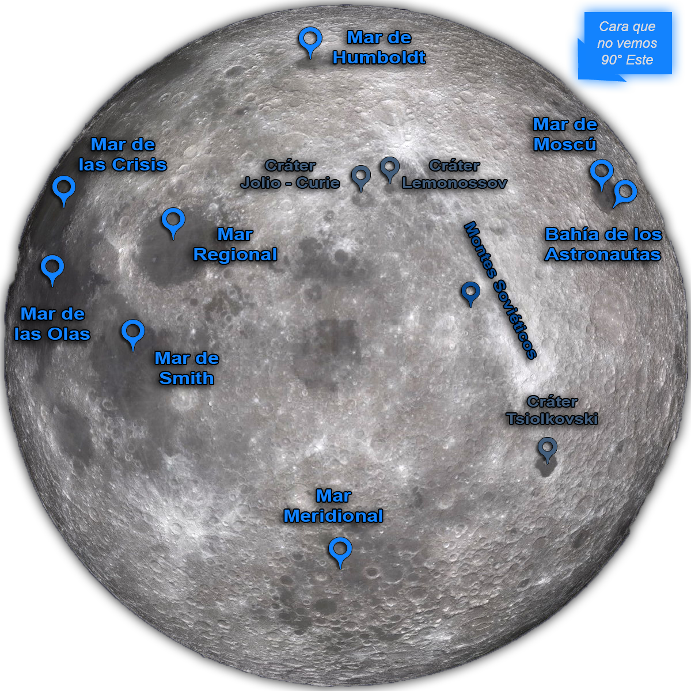
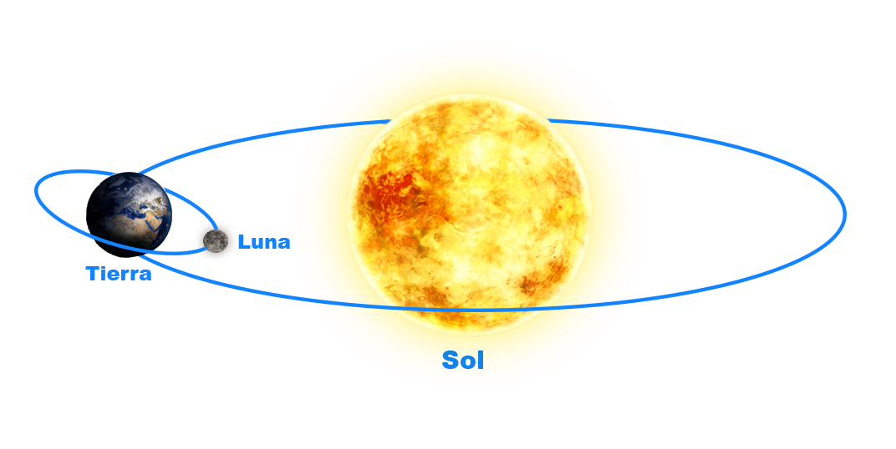
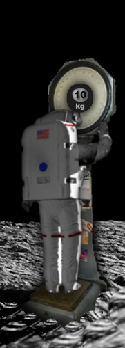
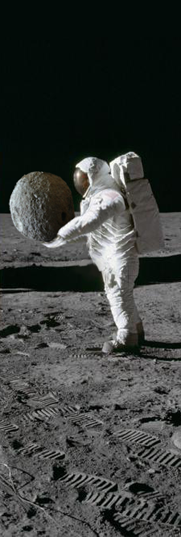

¿Cómo es la Luna?
La Luna está a dos pasos de la Tierra… Entendámonos: son dos pasos… astronómicos. Si los comparamos con los 150 millones de kilómetros a que dista la Tierra del Sol, los 384.000 kilómetros que separan a la Luna de nuestro planeta resultan una insignificancia.
Se llaman satélites los pequeños planetas que giran alrededor de un planeta mayor. La luna es el único satélite “verdadero” de la Tierra.

Este es el primer mapa de la Luna; fue diseñado por Galileo en el año 1610.
Es una esfera rocosa cincuenta veces más grande que la Tierra, sin aire ni agua, con la superficie alterada por grandes cráteres.
Los primeros hombres que “alunicen” se encontrarán en un desierto de rocas blanquecinas y rodeados del más pavoroso silencio. No podrán conversar por falta de aire para transmitir los sonidos, y si estuvieran en la parte de la Luna iluminada por el Sol tendrían que tolerar la misma temperatura del agua hirviendo, o sea cien grados centígrados. Si buscasen refugio en las zonas de sombra, el padecimiento no sería menor, pues tendrían que sufrir una temperatura de cien grados bajo cero. Cuando al atardecer observamos la Luna parece que estuviera quieta y, sin embargo, corre a la extraordinaria velocidad de 3.600 kilómetros por hora, o sea un kilómetro por segundo. ¿Hacia dónde va? Mientras la Tierra efectúa su vuelta alrededor del Sol a velocidad vertiginosa, la Luna la sigue y, también, gira sobre sí misma dando una vuelta cada 28 días, aproximadamente.
Además, este atareado planeta lunar gira alrededor de la Tierra, tardando en dar una vuelta cerca de 28 días, por lo que muestra siempre la misma cara. Ocurre lo mismo que con un buque navegando en torno de una isla: muestra siempre la misma banda, sea babor o estribor. Hace poco tiempo fue posible conocer “la otra cara de la luna” por fotografías tomadas desde una estación científica instalada en un satélite artificial que retransmitió las placas a una estación especial situada en la Tierra.

Los primeros mapas de la cara de la Luna que vemos, naturalmente muy aproximativos, datan del siglo XVII.
Hoy, en cambio, disponemos de magnificas fotografías obtenidas con potentísimos telescopio, como los de Monte Wilson (E.E.U.U.) y Monte Palomar (E.E.U.U.), que permiten ver la Luna como si se encontrara a pocos kilómetros de distancia.
Las manchas que se ven en la Luna, observadas de cerca se revelan como cráteres, montañas, grietas y circos montañosos.
Los cráteres, las montañas, las grietas y los circos montañosos (enormes cráteres de interior plano y bordes más bien bajos) corresponden, como forma, a las terrestres. Están, también, los llamados mares, que, en realidad, no son mares propiamente dichos. En efecto: en la Luna no hay agua; se trata, en cambio, de grandes zonas llanas cubiertas de polvo cósmico. El nombre de mares les fue dado en el siglo XVII.
Los mares más conocidos de esta cara de la Luna son: el Mar de la Tranquilidad, el Mar de Néctar, el Mar de la Felicidad y el Mar de las Tempestades.
La cumbre más elevada de la Luna se halla en los Montes Leibnitz (8.200 metros). Los montes más importantes son el “Cáucaso”, los “Apeninos” y los “Alpes”.

La Luna muestra siempre la misma cara a la Tierra, porque efectúa una vuelta alrededor de nuestro planeta en el mismo tiempo que realiza un giro sobre sí misma. Sin embargo, actualmente podemos conocer también la cara que la Luna nunca nos ha mostrado.
En 1959, el satélite artificial ruso Lunik III, después de girar alrededor de la Luna en una amplia órbita, fotografió desde una posición favorable la cara desconocida de la Luna y envió la imagen a la Tierra por medio de la televisión.
La “otra” cara de la Luna se presenta sustancialmente similar a la que conocemos.
También tiene mares y cráteres, aunque en número mucho menor; igualmente es árida y desprovista de toda señal de vida. El único fenómeno singular que no se encuentra en la cara de la Luna que mira a la Tierra es una cadena de montes, de una 2.000 kilómetros de longitud, llamada “Montes Soviéticos”.

La luna en cifras:
Diámetro de la Luna: 3.476 km. (Diámetro de la Tierra: 12.756 km.).
Distancia de la Luna a la Tierra: 384.000 km.
Altura máxima de las montañas de la Luna: 8.200 m.
Ancho máximo de los cráteres y de los circos montañosos: 240 km.
Peso de la Luna: 74.000.000.000.000.000 de toneladas; es decir, 81 veces menos que el de la Tierra.
Los tres movimientos de la Luna:
Movimiento de rotación (sobre sí misma, en 27 días, 7 horas, 43 minutos).
Movimiento de revolución (alrededor de la Tierra, en 27 días, 7 horas, 43 minutos).
Movimiento de traslación (completado en un año, alrededor del Sol junto con la Tierra).
En la Luna, todo es más liviano
La Luna es mucho más pequeña que la Tierra. En consecuencia tiene una menor fuerza de gravedad, de modo que los cuerpos son atraídos con menos fuerza hacia la superficie lunar. En otras palabras, pesan menos que en la Tierra.
Así, por ejemplo, un hombre que en la Tierra pesa 60 kg, en nuestro satélite pesaría sólo 10 kg, o sea como un niño de un año. Recordemos que en la Luna se pesa 6 veces menos que en la Tierra.
Otra consecuencia de la menor atracción ejercida sobre la superficie lunar es que un hombre que descendiera en la Luna podría levantar grandes masas.
